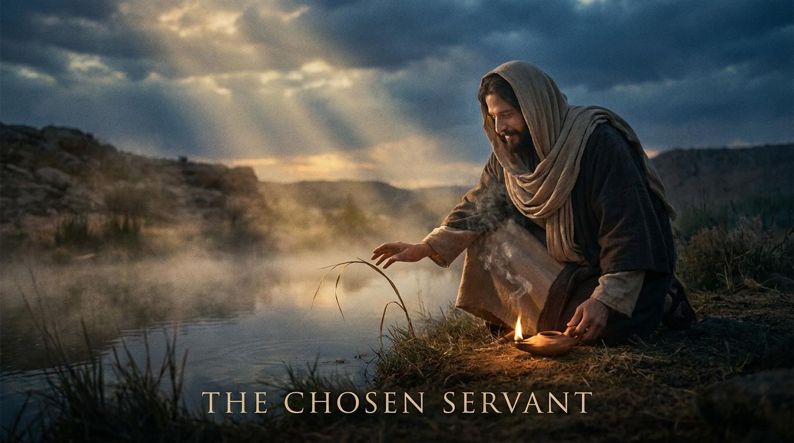

第一段：隱藏與溫柔的君王：在破碎中看見盼望
法利賽人正在商議如何除滅耶穌。面對這樣的逼迫，耶穌沒有呼叫十二營的天使來消滅敵人，反而選擇退去。
「壓傷的蘆葦，他不折斷；將殘的燈火，他不吹滅；等他施行公理，叫公理得勝。」
這是何等震撼的宣告！在當時，蘆葦隨處可見，一旦被壓傷，人們就會直接折斷丟掉。但我們的耶穌不是這樣！祂不丟棄我們這些破碎的生命，反而用恩典的純金修補我們的裂縫。

「壓傷的蘆葦，他不折斷；將殘的燈火，他不吹滅；等他施行公理，叫公理得勝。」 （馬太福音 12:20）
主耶穌，我們感謝祢！因為祢是那位溫柔的君王，面對我們的軟弱與破碎，祢不折斷也不吹滅，反而施恩醫治；祢也是那位大能的得勝者，已將那惡者捆綁，使神的國真實臨到我們當中。求聖靈開啟我們的屬靈眼光，光照我們的內心，使我們不致剛硬拒絕神的工作，而能完全降服於祢的權權柄之下。奉耶穌基督得勝的名求，阿們！
太 12:15-21
太 12:22-29
太 12:30-32
經文範圍：太 12:15-21
因為上帝的國度是從「心」開始轉化的。祂的得勝不是透過武力，而是透過十字架上的犧牲。
「耶穌就像這位金繼大師，祂不丟棄我們這些『壓傷的蘆葦』，反而用祂的恩典填補我們的裂痕。」
名言：當我們真實面對自己的破碎時，我們才能成為別人生命中的醫治者。
—— 盧雲
經文範圍：太 12:22-29
基督在十字架上的得勝就是我們的 D-Day，壯士已經被捆綁。我們現在的屬靈爭戰，是站在勝利基礎上的清理戰場。
壯士 (ischyros)：
強壯的、有勢力的。此處暗指撒但。
趕出 (ekballō)：
強力驅逐。這表明神國對黑暗勢力是絕對的壓制。
經文範圍：太 12:30-32
「在極地求生時，最危險的信號不是刺骨的疼痛，而是不再感覺到痛。法利賽人的屬靈狀態就是嚴重的凍傷。」
不是一時的軟弱，而是一種持續性、蓄意且堅決的心態——眼睜睜看著聖靈的作為，卻硬將其歸給魔鬼。
弟兄姊妹們，平安！在我們所處的這個世界裡，「力量」往往等於「征服」，「權力」往往等於「壓制」。然而，當上帝的國度降臨在地上時，它展現出的卻是完全不同的法則。
法利賽人正在商議如何除滅耶穌。面對這樣的逼迫，耶穌沒有呼叫十二營的天使來消滅敵人，反而選擇退去。
「壓傷的蘆葦，他不折斷；將殘的燈火，他不吹滅；等他施行公理，叫公理得勝。」
這是何等震撼的宣告！在當時，蘆葦隨處可見，一旦被壓傷，人們就會直接折斷丟掉。但我們的耶穌不是這樣！祂不丟棄我們這些破碎的生命，反而用恩典的純金修補我們的裂縫。
耶穌用一個非常有力的比喻回應他們：「人怎能進壯士家裡，搶奪他的家具呢？除非先捆住那壯士，才可以搶奪他的家財。」
在我們的日常生活中，我們該如何經歷「神的國臨到」？我們必須明白一個屬靈的事實：基督在十字架上的得勝，就像是諾曼第登陸，敵人的主力已經被擊潰，壯士已經被捆綁。我們不是為了爭取勝利而戰，而是站在主耶穌的勝利基礎上宣告得勝！
耶穌發出了一個極其嚴肅的警告：「惟獨說話干犯聖靈的，今世來世總不得赦免。」
如果你現在還會為自己的罪感到懊悔，擔心自己得罪神，這正證明聖靈還在你心中工作，你的心沒有壞死！聖靈的責備就像那刺骨的痛覺，雖然不舒服，卻是我們靈命還活著的證明。
「聖靈若不在我們心中作感動與重生的工作，基督在十字架上所成就的一切客觀救恩，對我們而言就如同不存在一樣。」
—— 約翰·加爾文 (John Calvin)
「一個不認識自己是個可憐、失喪、破產、敗壞罪人的人，他絕對無法真正明白耶穌基督福音的榮耀。」
—— 司布真 (Charles Spurgeon)
「上帝的恩典是白白的，但絕不是廉價的。廉價的恩典是我們自己給自己的恩典；那是沒有悔改的赦免，是沒有十字架的恩典。」
—— 潘霍華 (Dietrich Bonhoeffer)
「當我們的心充滿了對世界事物的渴望時，聖靈的聲音就會被淹沒；惟有當我們倒空自己，神的大能才能進駐。」
—— 陶恕 (A.W. Tozer)
「上帝的國度並非一套抽象的宗教理念，而是一個具體的現實：耶穌基督如今正在掌權，並呼召我們將生活的每一個層面降服於祂。」
—— 魏樂德 (Dallas Willard)
「如果基督徒沒有經歷到屬靈爭戰，那可能是因為他正走在與魔鬼相同的方向；當你轉身走向神，你必定會迎面撞上惡者。」
—— 葛理翰 (Billy Graham)
「真宗教的本質，絕大部份在於神聖的情感。當聖靈真實觸摸人心時，人的心是不可能保持冷漠的。」
—— 喬納森·愛德華茲 (Jonathan Edwards)
「福音不是宣告我們必須做什麼才能得救，而是宣告上帝在基督裡已經為我們成就了什麼；這就是戰勝黑暗勢力的根基。」
—— 提摩太·凱勒 (Timothy Keller)
「十字架是上帝對抗人類罪惡與魔鬼權勢的最終戰場，在那裡，基督的極度軟弱成了粉碎魔鬼頭顱的絕對能力。」
—— 約翰·史托德 (John Stott)
「魔鬼最害怕的不是我們有多麼努力，而是我們學會了如何徹底倚靠那一位已經得勝的基督。」
—— 馬丁·路德 (Martin Luther)
網路資料可能出錯，請小心查證、謹慎使用。